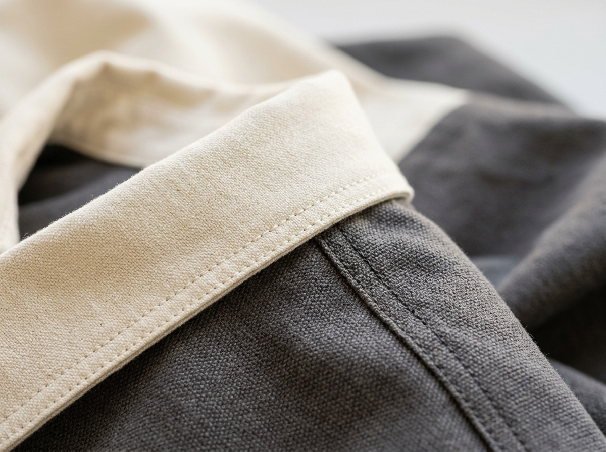

FINISHING DETAIL
Double-Stitch Collar & Jahit Rantai Ekspor
Menggunakan rib katun spandex elastis 2.5 cm yang tidak melar walau dicuci berkali-kali. Pundak dilapisi jahit rantai ganda untuk ketahanan maksimal.
Overdeck 3 Jarum
Anti Melar
Standar ISO Quality